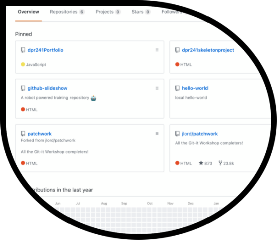

Git is a place on the internet where code can be stored and websites are hosted. When I first started using Git, I thought it would be similar to the file transfer portal, where you connect to a server online via the server's web address and you can view the files on the local computer and server. Then you can actually see which files your moving to the server by dragging them there. But Git has a different process of transferring the files to GitHub and similar to using the command prompt for administrative tasks and troubleshooting PCs. This process only uses text syntax commands to transfer files between the GitHub server and a user's local computer. I was familiar with the command prompt on a windows PC but not familiar with the command prompt for mac computers, which is called the terminal when using Git.
So, using the terminal to send the webpage files to GitHub wasn't that confusing to me. The most challenging part to me when using Git is the learning process of the language to use in the terminal. For instance, I had to get familiar with the command, "git int" to first create the repository on my local computer. Also, the "git commit" command to save the initial repository and save changes to the repository. I had to understand that creating the repository is like creating a directory to hold the web page files, in order to send the files up to the GitHub hosting website.
While learning the Git process, I was able to create six repositories:

The hello-world was the first repository I created as a result of the GitHub introductory training. It was important to learn this first repository to experience the basics for creating repositories. In GitHub, there is a way to work with other users on projects. So, the two repositories', patchwork and jlord/patchwork were created by the user, jlord, who is a user from the GitHub training. With these repositories, I acted as a contributor for training purposes by uploading test files. This process wasn't difficult because of the repository already being created. I just had to download the repositories to my local computer, add the file to the repository folder and then upload the repository back, using the terminal and Git commands. For the github-slideshow repository, I also acted as an contributor for training purposes by deploying a file. After learning how to create, contribute and deploy repositories, I was able to create my own repositorries for my portfolio homepage, dpr241Portfolio and my resume page, Resume using skeleton.
I didn't realize, during the time of developing my portfolio, it's an excellent idea to include a resume on the porfolio in order to showcase a history of work experience and accomplishments. Initially, while developing my porfolio, I was more focused on showcasing what I'm learning, as a result of taking this mobile web development class. Thus, using Git and Github in my opinion is a a good way for web developers to organize web projects and conveniently work in teams to accomplish web projects more efficiently.